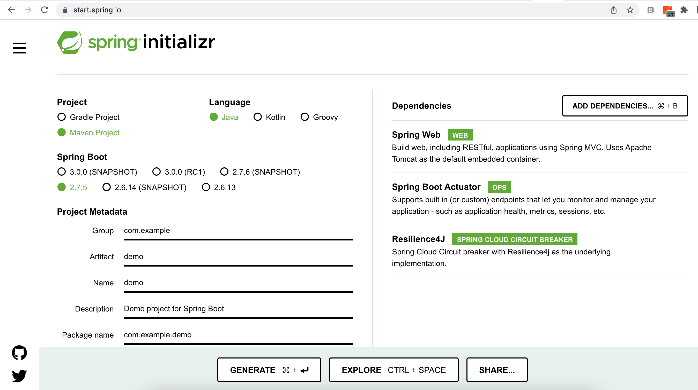

Spring Boot & Kubernetes
Skaffold a Spring Boot
The first thing we need is a Spring Boot application. To skaffold it, we use the Spring Initilizr web page located at https://start.spring.io/.
In the page, fill the form with the values shown in Spring Initializr, keeping an eye to add Spring Web, Resilience4J and Spring Boot Actuator.

Figure 1. Spring Initializr
Push the Generate button which will download the source code.
Unzip the downloaded file and open the project in your favourite IDE:
unzip hello-kubernetes.zip
cd hello-kubernetesIn your IDE, create a new class named HelloController in org.acme.hellokubernetes package:
package org.acme.hellokubernetes;
import org.springframework.web.bind.annotation.GetMapping;
import org.springframework.web.bind.annotation.RestController;
@RestController
public class HelloController {
@GetMapping("/hello")
String hello() {
return "Hello World";
}
}Build and Run
We can build the project and run it:
./mvnw package -DskipTests
java -jar target/hello-kubernetes-0.0.1-SNAPSHOT.jarcurl localhost:8080/helloHello WorldSo far, nothing new, we’ve skafolded a simple Spring Boot Rest API. In the following section, we’ll start looking at how to "Kubernetize" a Spring Boot application.